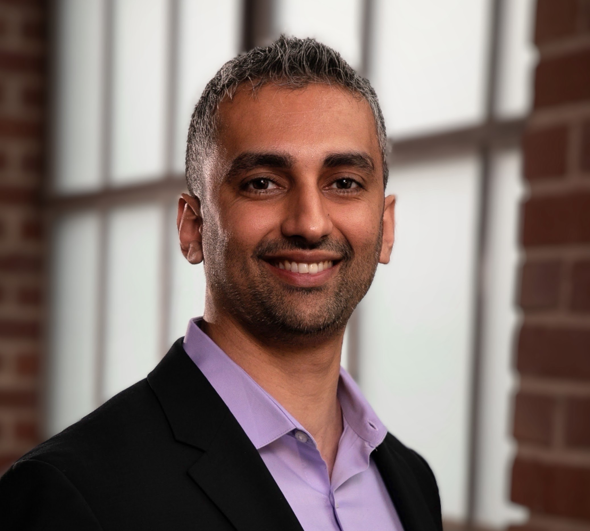
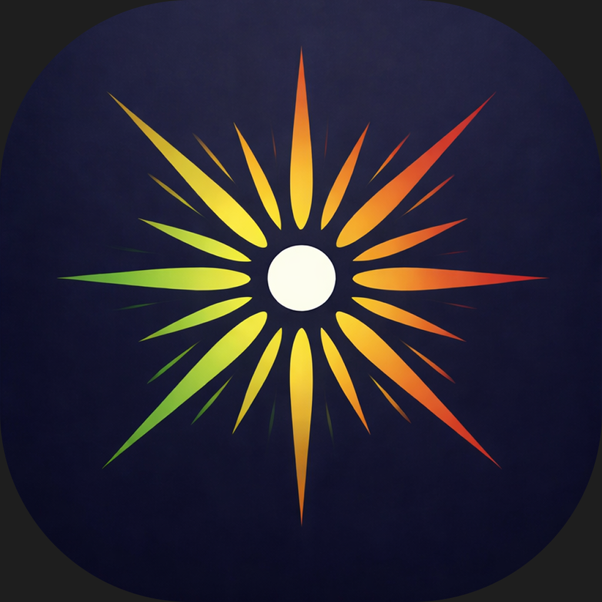
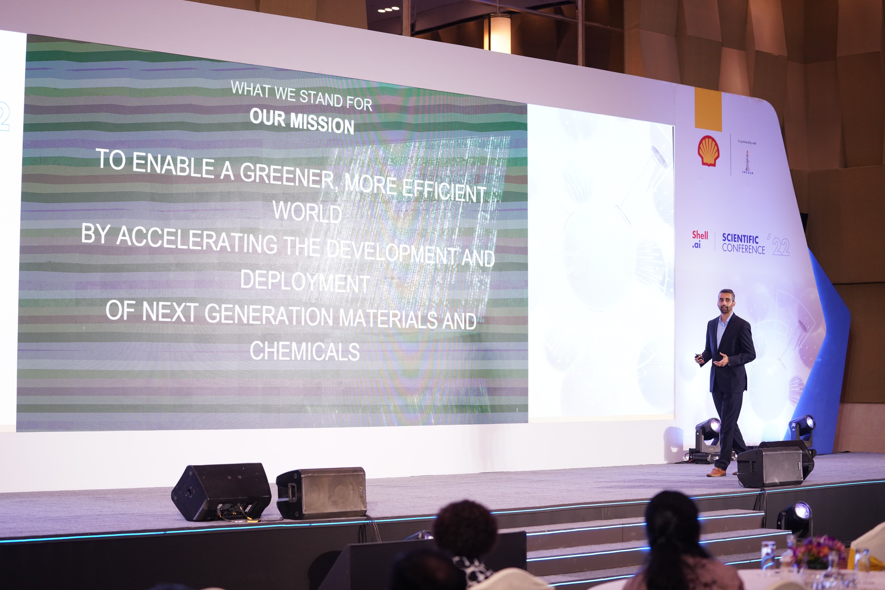
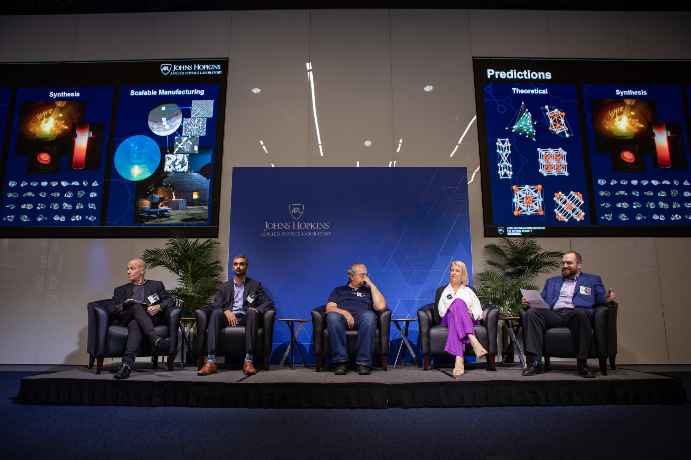
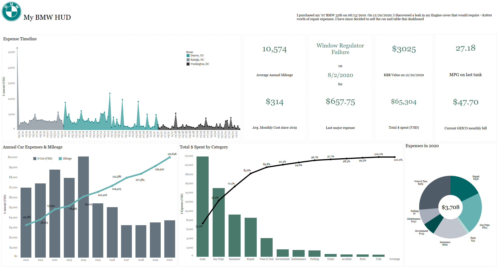
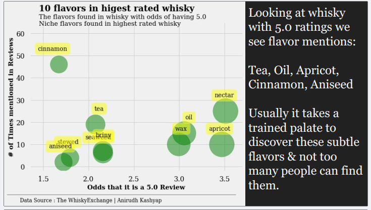

Building AI/ML Solutions Engineering teams since 2017,
now at the frontier of agentic AI. I turn early-stage
technical orgs into world-class GTM engines focused on
deal clarity, business outcomes, and customer trust.

I spent the first decade of my career in the cutting edge chemicals industry — from helping launch the world's brightest LED light bulb to building components that went into the mobile revolution. In 2016, I realized AI was the future and made the pivot to consulting, data science, and eventually Solutions Engineering leadership.
Today, I lead enterprise Solutions Engineering teams at AI/ML SaaS companies — building the function, the process, and the people from scratch. I believe the rarest skill in technical GTM is connecting platform capability to business outcome with enough clarity to close. That's what I do.
Outside of work, I'm driven by the same instinct: if I haven't done it, I want to learn it. I speak five languages, have traveled to over 30 countries, and have lived and worked in Taiwan and Japan. Every year I pick up something new — a sport, a language, a skill — because I believe life is richer when you chase experiences over objects.





Open to Director / VP of SE roles at AI/ML and enterprise SaaS companies that value technical depth paired with real commercial impact.